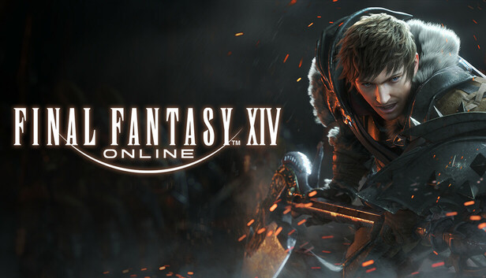
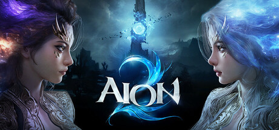

Olen 35-vuotias kuopiolainen mies. Siirryin ohjelmistokehittäjien iltaryhmään 19 lokakuuta 2026 it-tuen suuntautumisesta. Minua kiinnostaa etenkin peliohjelmointi.
Tykkään tietokoneista ja pelaamisesta, erityisesti nettirooli- ja retropeleistä. Suosikkini tällä hetkellä ovat FFXIV ja Aion 2. Ensimmäinen oma pelikonsolini oli 7-vuotislahjaksi saamani Super Nintendo. Siitä siirryin Playstation 1:sen, 2:sen Wiin ja Xbox 360:n kautta nykyiseen Playstation 4:seen, jota tosin pelaan vähän, koska tietokoneella on mielenkiintoisempia pelejä.
Olen myös aikoinaan soittanut rumpuja, kitaraa ja koskettimia. Omistan nykyään koskettimet ja akustisen kitaran. Haluaisin jatkaa varsinkin rumpujen soittoa joskus.

